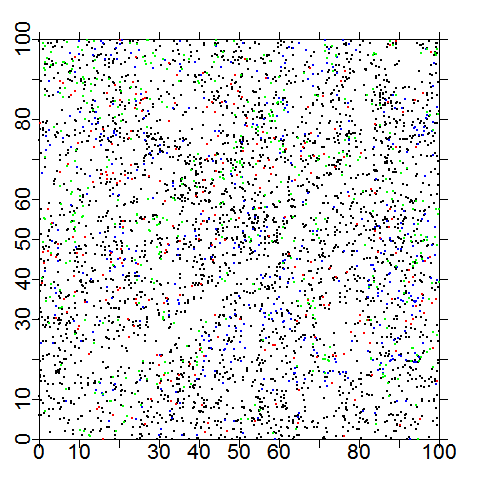
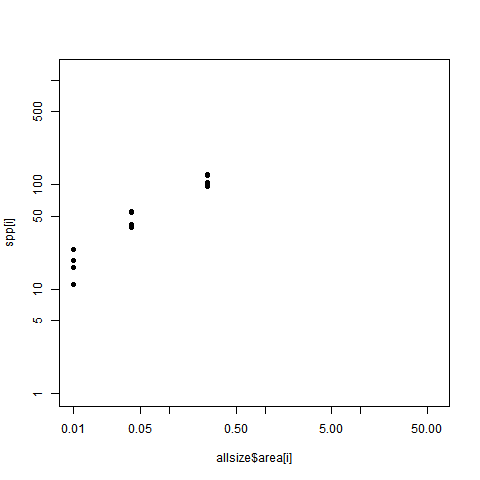
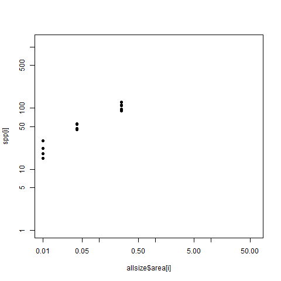
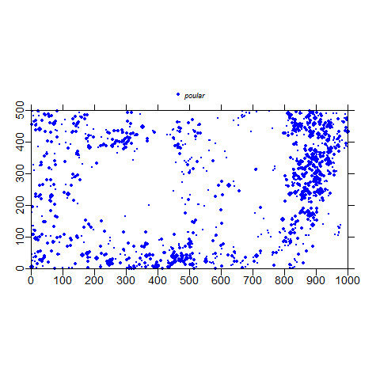

Test plots
Mauro Lepore
<<<<<<< HEAD2017-05-22
||||||| merged common ancestors2017-05-12
=======2017-05-23
>>>>>>> dev
graph.outliers.spp()

Reference

Actual
extract.growthdata
#> function(census1,
#> census2,
#> growcol = "incgr",
#> mingrow = 0.1,
#> logit = "x",
#> growthfunc = growth.biomass.indiv,
#> pomcut = 10000,
#> rounddown = FALSE,
#> mindbh = 10,
#> dbhunit = "mm",
#> err.limit = 4,
#> maxgrow = 75,
#> exclude.stem.change = TRUE,
#> returnfull = FALSE) {
#> growthtable = growthfunc(
#> census1,
#> census2,
#> rounddown = rounddown,
#> mindbh = mindbh,
#> dbhunit = dbhunit,
#> err.limit = err.limit,
#> maxgrow = maxgrow,
#> pomcut = pomcut,
#> exclude.stem.change = exclude.stem.change
#> )
#> growthrate = growthtable[, growcol]
#> dbh = growthtable$dbh1
#> treeID = growthtable$treeID
#> agb = growthtable$agb1
#>
#> if (logit == "x" | logit == "xy")
#> {
#> dbh = log(growthtable$dbh1)
#> agb = log(growthtable$agb1)
#> }
#>
#> if (logit == "y" | logit == "xy")
#> {
#> growthrate[growthrate <= 0] = mingrow
#> growthrate = log(growthrate)
#> }
#>
#> result = data.frame(
#> sp = I(growthtable$sp),
#> treeID,
#> dbh = dbh,
#> agb = agb,
#> growth = growthrate
#> )
#>
#> cond_1 <- !is.na(result$growth) &
#> !is.na(result$dbh) &
#> !is.na(result$agb) &
#> !is.na(result$sp)
#> result <- result[cond_1, , drop = FALSE]
#>
#> if(!returnfull) return(result)
#>
#> cond_2 <- !is.na(growthtable$growthrate) &
#> !is.na(growthtable$dbh1) &
#> !is.na(growthtable$agb1) &
#> !is.na(growthtable$sp)
#> vars <- c('sp', 'treeID', 'dbh1', 'dbh2', 'agb1', 'agb2', 'time', 'incgr')
#> full <- growthtable[cond_2, vars, drop = FALSE]
#>
#> colnames(full)[which(colnames(full) == 'incgr')] = 'growth'
#>
#> if(returnfull) return(full)
#> }
#> <environment: namespace:forestr>
complete.plotmap()

Reference
Actual
complete.plotmap
#> function(cns = bci.full6,
#> spnames = NULL,
#> mindbh = 10,
#> export = 'no',
#> nospp = 3,
#> plotdim = c(1000, 500),
#> clrlist = c('blue', 'green', 'red', 'yellow', 'gray'),
#> ptsize = c(.45, 0.3),
#> xrange = c(0, 100),
#> yrange = c(0, 100),
#> wd = 1100,
#> ht = 850,
#> side = 6,
#> labsize = 1.75,
#> axisdiv = 10,
#> filepath = '/home/condit/data/maps/',
#> outfile = 'fullplotmap') {
#> filename=get.filename(file=outfile,path=filepath,exp=export,species="FullPlot")
#> define.graphwindow(export = export,
#> h = ht,
#> w = wd,
#> file = filename
#> )
#> if(export!="unix" & export!="no" & export!="mac" & export!="windows") on.exit(graphics.off())
#>
#> cond_1 <- cns$status == 'A' &
#> cns$dbh >= mindbh &
#> insideRectangle(cns$gx, cns$gy, xrange, yrange)
#> alive = cns[cond_1, , drop = FALSE]
#>
#> N=table(alive$sp)
#> if(is.null(spnames)) spnames=names(sort(N,decreasing=TRUE))[1:nospp]
#> map1species(alive,color='black',plotdim=plotdim,plotside=side,cutoff=c(mindbh,10000),size=ptsize[2],
#> xrange=xrange,yrange=yrange,axisdiv=axisdiv,labsize=labsize)
#>
#> if(is.null(nospp)) return('')
#> if(nospp==0) return('')
#>
#> for(i in 1:nospp)
#> {
#> onespdata <- alive[alive$sp == spnames[i], , drop = FALSE]
#>
#> map1species(onespdata,color=clrlist[i],cutoff=c(mindbh,10000),size=ptsize[1],add=TRUE)
#> }
#> }
#> <environment: namespace:forestr>
spparea.sq()

Reference

Actual
spparea.sq
#> function(censdata,
#> spcolumn = 'sp',
#> size,
#> rectdim = 1,
#> mindbh = NULL,
#> plotdim = c(1000, 500),
#> replicates = 10,
#> unidennames = c("**", "UNID", "uniden", "UNIDEN")) {
#> toolong=size[size>plotdim[1]]
#> size=size[size*rectdim<=plotdim[2]]
#>
#> if(length(toolong)>0)
#> {
#> cat("size ", min(toolong))
#> if(length(toolong)>1) cat(", ", max(toolong))
#> cat (" too big for plot\n")
#> }
#>
#> if(is.null(mindbh)) {
#> cond_1 <- censdata$status == "A" &
#> !unidentified.species(spcolumn, exactstr = unidennames)
#> censdata <- censdata[cond_1, , drop = FALSE]
#>
#> } else {
#> cond_2 <- censdata$status == "A" &
#> censdata$dbh >= mindbh &
#> !unidentified.species(spcolumn, exactstr = unidennames)
#> censdata <- censdata[cond_2, , drop = FALSE]
#> }
#>
#> allsize=selectrandomquad(size,rectdim,replicates,plotdim)
#> noquad=dim(allsize)[1]
#>
#> spp=ind=numeric()
#> for(i in 1:noquad)
#> {
#> cond_3 <- censdata$gx >= allsize$xlo[i] &
#> censdata$gx < allsize$xhi[i] &
#> censdata$gy >= allsize$ylo[i] &
#> censdata$gy < allsize$yhi[i]
#> data <- censdata[cond_3, , drop = FALSE]
#>
#> spp[i]=length(unique(data[,spcolumn]))
#> ind[i]=length(data[,spcolumn])
#>
#> if(i==1) plot(allsize$area[i],spp[i],pch=16,ylim=c(1,1200),xlim=c(.01,60),log="xy")
#> else points(allsize$area[i],spp[i],pch=16)
#> }
#>
#> full=data.frame(area=allsize$area,taxa=spp,ind)
#> taxa=tapply(full$taxa,full$area,mean)
#> SDtaxa=tapply(full$taxa,full$area,sd)
#> indiv=tapply(full$ind,full$area,mean)
#> SDindiv=tapply(full$ind,full$area,sd)
#> area=tapply(full$area,full$area,mean)
#>
#> no.area=length(size)
#> taxa[no.area+1]=length(unique(censdata[,spcolumn]))
#> indiv[no.area+1]=length(censdata[,spcolumn])
#> SDtaxa[no.area+1]=SDindiv[no.area+1]=NA
#> area[no.area+1]=plotdim[1]*plotdim[2]/1e4
#> xdim=c(size,plotdim[1])
#> ydim=c(size*rectdim,plotdim[2])
#>
#> return(list(spparea=data.frame(xdim,ydim,area,indiv,SDindiv,taxa,SDtaxa),full=full))
#> }
#> <environment: namespace:forestr>
map()

Reference

Actual
map
#> function(splitdatafile,
#> species,
#> spplist = NULL,
#> plotdim = c(1000, 500),
#> xrange = c(0, plotdim[1]),
#> yrange = c(0, plotdim[2]),
#> elevdata = NULL,
#> cutoff = c(10, 100, 300, 3000),
#> size = NULL,
#> deadtree = FALSE,
#> maintitle = '',
#> titlepos = c(plotdim[1] / 2, 1.32 * plotdim[2]),
#> clrs = NULL,
#> bw = FALSE,
#> bgcolor = 'white',
#> symbols = NULL,
#> xaxis = TRUE,
#> yaxis = TRUE,
#> addlegend = TRUE,
#> legpos = c(plotdim[1] / 2, 1.16 * plotdim[2]),
#> legsize = 0.75,
#> labsize = 1.15,
#> axisdiv = 100,
#> bty = 'n',
#> ht = 6,
#> wd = 9,
#> plotside = 6,
#> axspos = 0.5,
#> topoclr = 'gray80',
#> topoint = 0,
#> export = 'no',
#> filepath = '',
#> outfile = NULL
#> )
#> {
#> filename=get.filename(file=outfile,path=filepath,exp=export,species=species)
#> define.graphwindow(export = export,
#> h = ht,
#> w = wd,
#> file = filename)
#> if(export!="unix" & export!="no" & export!="mac" & export!="windows") on.exit(graphics.off())
#>
#> col=latin=character()
#> symb=numeric()
#>
#> if(!is.null(spplist)) latin=spplist[species,]$Latin
#> else latin=species
#>
#> nogrp=length(cutoff)-1
#> if(is.null(size)) size=setsize(nogrp,dim(load.species(species[1],splitdatafile))[1])
#>
#> if(is.null(clrs))
#> {
#> if(!bw) col=c("blue","red","black","green","yellow","lightblue","orange")
#> else col=c("black","black","gray80","gray80","gray30","gray30")
#> }
#> else col=clrs
#>
#> if(is.null(symbols))
#> {
#> if(bw) symb=rep(16,6)
#> else symb=c(16,1,16,1,16,1)
#> }
#> else symb=symbols
#>
#> topo=FALSE
#> if(!is.null(elevdata)) topo=TRUE
#>
#> if(topo)
#> maptopo(
#> elevmat = elevdata,
#> plotdim = plotdim,
#> xaxis = xaxis,
#> yaxis = yaxis,
#> interval = topoint,
#> ht = ht,
#> wd = wd,
#> plotside = plotside,
#> labelsize = labsize,
#> axspos = axspos,
#> bgcolor = bgcolor,
#> clr = topoclr
#> )
#> # browser()
#> for(i in 1:length(species))
#> {
#> if(species[i] %in% names(splitdatafile)) sppdata=load.species(species[i],splitdatafile)
#> else sppdata=data.frame(gx=numeric(),gy=numeric(),dbh=numeric(),status=character())
#>
#> if (is.null(deadtree)) {
#> cond_1 <- sppdata$gx >= 0 &
#> sppdata$gy >= 0 &
#> sppdata$gx < plotdim[1] &
#> sppdata$gy < plotdim[2]
#> sppdata <- sppdata[cond_1, , drop = FALSE]
#> } else {
#> if (deadtree) {
#> cond_2 <- sppdata$gx >= 0 &
#> sppdata$gy >= 0 &
#> sppdata$gx < plotdim[1] &
#> sppdata$gy < plotdim[2] &
#> sppdata$status == 'D'
#> sppdata <- sppdata[cond_2, , drop = FALSE]
#> } else {
#> cond_3 <- sppdata$gx >= 0 &
#> sppdata$gy >= 0 &
#> sppdata$gx < plotdim[1] &
#> sppdata$gy < plotdim[2] &
#> sppdata$status == 'A'
#> sppdata <- sppdata[cond_3, , drop = FALSE]
#> }
#> }
#>
#> if(i==1 & !topo)
#> map1species(sppdata,color=col[i],symbol=symb[i],size=size,xrange=xrange,yrange=yrange,xaxis=xaxis,yaxis=yaxis,
#> cutoff=cutoff,plotdim=plotdim,plotside=plotside,bgcolor=bgcolor,axspos=axspos,labsize=labsize,axisdiv=axisdiv)
#> else
#> map1species(sppdata,color=col[i],symbol=symb[i],cutoff=cutoff,xrange=xrange,yrange=yrange,
#> size=size,plotdim=plotdim,plotside=plotside,add=TRUE)
#> }
#>
#> # browser()
#> oldpar=par(xpd=TRUE,font=3,xpd=NA)
#>
#> text(x=titlepos[1],y=titlepos[2],labels=maintitle,col=col[1],font=2,cex=1.25)
#>
#> if(addlegend) legend(x=legpos[1],y=legpos[2],legend=latin,xjust=0.5,col=col,text.col='black',bty=bty,pch=16,horiz=T,y.intersp=1.2,cex=legsize)
#> par(oldpar)
#>
#> return(filename)
#> }
#> <environment: namespace:forestr>